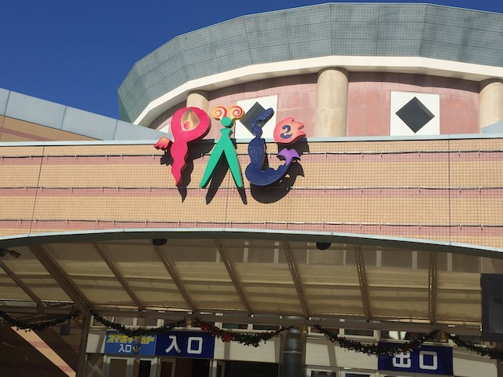
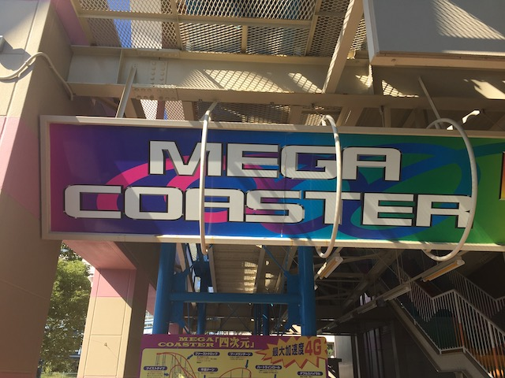
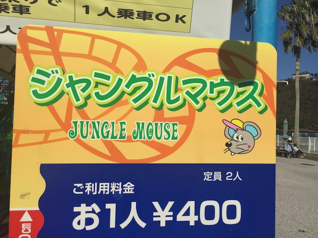
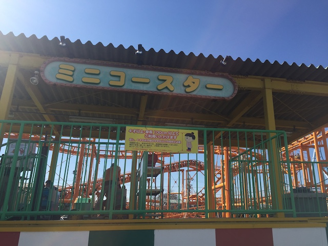
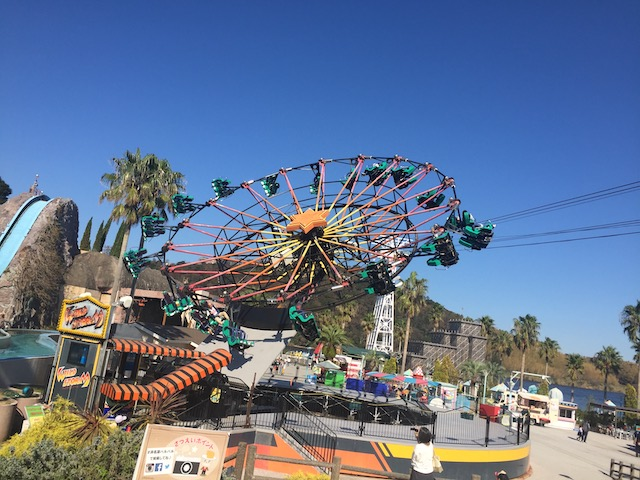
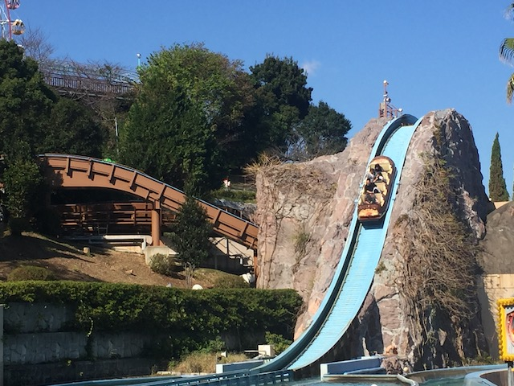
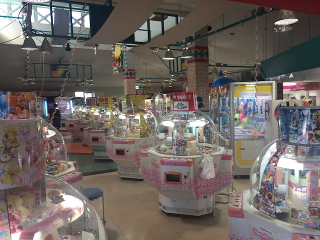

| |
Hamanako Pal Pal Review

Hamanako Pal Pal is one of the smaller parks in Japan, as well as one of the less frequently visited parks. I mean, don't get me wrong. This isn't some tiny little credit whore park. It's a small little park, but it's a lot of fun. I know if you're a coaster enthusiast, there's one reason you're here. I know there's one primary reason I went out of my way to hit this park on my Japan trip. Mega Coaster. Now if you look at Mega Coaster, this coaster looks terrifying. I mean, this looks scarily similar to a certain peice of sh*t in Las Vegas, but it's actually really fun. I don't want to go into too many details as I have a full review of the coaster down below, but needless to say, all the positive reviews and the shock people have over the ride not sucking is complteely warranted. But how is the rest of Hamanako Pal Pal. Well, it's actually pretty fun. Sure, the other coasters are fairly crappy. But there are other interesting fun rides. Yeah. I'm not gonna lie and say that Hamanako Pal Pal is this greatest theme park ever. But it is a fun little quirky Japanese theme park. And this is a VERY Japanese theme park. So go ahead, and continue reading this review and see what all this park has to offer.
Rollercoasters
There is a link to a review of all the Rollercoasters at Hamanako Pal Pal.
Top Coasters
Mega Coaster Review

Family Coasters
Jungle Mouse Review

Mini Coaster Review

Flat Rides
Here are all of the flat rides at Hamanako Pal Pal. First things first, let's talk about their star flat ride. Wild Storm. Now just looking at this ride, this doesn't look like anything special. An enterprise? What's so great about that? Well, look closely. Notice how the seats are swinging like a suspended coaster? Yeah. That's because this isn't an enterprise, but rather a Togo Wild Storm. Yeah. A flat ride by Togo may sound crazy, stupid, and like a terrible idea. But nope. This is actually a really fun ride. Wild Storm, which is basically a cross between one of those modern enterprises, and a paratrooper, is essentially an enterprise that swings at the bottom. And...that just makes the ride so much more fun. It's a shame that these rides are so rare. I know I've seen other models of this ride. But I just can't remember where. I'm assuming at smaller not important Japanese parks that I haven't visited. All I can say is that it's a shame that Togo went bankrupt because I want more of these rides built damn it! That's the primary ride at Hamanako Pal Pal. But there are a few others. I know there's also a pirate ship that was fun, but generic. Also, they have one of those classic giant ferris wheels that seem to be a staple of all Japanese parks. And it has some great views. Not only of Hamanako Pal Pal, but just of the surrounding area. But we'll discuss that later. There's also a few other flat rides here, such as a double decker carousel, and a few other random flat rides. Nothing special. Well, except for Wild Storm.

Seriously. These things need to be as popular as normal enterprises.
Dark Rides
All right. The dark ride collection at Hamanako Pal Pal is....interesting. And to talk about that, let's talk about the parks mascot first. You see, Hamanako Pal Pal LOVES Pinnochio. No, not the Disney version of Pinnochio (don't want any lawsuits. Plus, Tokyo Disney isn't too far away thanks to the Shinkansen). No, they love the original Pinnochio. The characters from the original book. Well, with a twist. You see, Hamanako Pal Pal also has Lobster Pinnochio. I'm not sure why Lobster Pinnochio exists, but nonetheless, Lobster Pinnochio is f*cking awesome! Hmm, when Lobster Pinnochio goes to Pleasure Island, does he just turn into a jackass like everyone else, or does he become a donkey-lobster hybrid freak. Anyways, back to the main dark ride I did. Dragon Fighter. Now this is a sort of....video game shooting game dark ride. Yeah. It's a shooting dark ride and a video game on a track. Now this ride is entirely in Japanese. And yet, despite me not speaking the language, I semi-got the hang of this game. And it's a ton of fun. There's also the Marionette Ride. I didn't ride it, but it looks like a fun ride. Looks like a traditional dark ride, that is essentially the story of Pinnochio. With Lobster Pinnochio thrown in. They also have one of those stupid boat rides (Also known as a spinning boat ride). Didn't ride it, but those are fun rides. I know some count those as water rides, but....these feel more like a dark ride on the water, like Pirates of the Carribean or Jungle Cruise.
 Despite not speaking the language, this ride is a lot of fun.
Despite not speaking the language, this ride is a lot of fun.
Water Rides
All right. Moving onto the water rides. Yeah. There's only one water ride here. The parks log flume. But at the same time, it's actually a decent one. Sure, this thing isn't gonna make our Top 10 Water Rides List. But it's still an above-average log flume. Let's start out with the fact that it's a pretty big one. I've seen so many patheticly small log flumes. So to have one that actually has a decent sized drop is pretty cool. Plus, it has a little more stuff to it beforehand. Hell, kind of reminds me of Daredevil Falls @ Dollywood in a way. Not the greatest log flume ever, but still a lot of fun and definetly worth riding while at Hamanako Pal Pal (assuming you're not just gonna credit whore and then bolt out of there).

This is a pretty good log flume.
Dining
I did not eat Hamanako Pal Pal.
Theming and Other Attractions
Here are the reviews of all the other stuff at Hamanako Pal Pal. As far as theming goes, there's not that much. Yeah. Lobster Pinnochio is the mascot, and is AWESOME!!! But aside from a few dark rides, there is NO theming at Hamanako Pal Pal. It's VERY MUCH an amusement park. But it doesn't need that. The park has a FANTASTIC park setting. It is located right by the shore of Uchiuri Bay, which is part of Lake Hamana and has a fantastic view of that and the surrounding mountains. It's in a really pretty place. But what about other attractions? Well, for all the rides that the park has, that's actually not the centerpiece of the park. No, what actually is the centerpiece of the park is a GIANT arcade that is filled with all sorts of wacky Japanese video games. Now I never really play arcade games, so I never played any of these games. Maybe another time, and if I was with other people, I might play. They also have one of those Ice Houses that are really popular in Japan. Cool idea, but....they're not necesarry in November, when the weather is cool. Not too much else, but between the rides and the giant arcade, Hamanako Pal Pal has plenty.

This giant arcade is the centerpiece of the park.
In Conclusion
Hamanako Pal Pal is a fun little park that may be far from the best park ever, but it still has a decent amount of stuff to do for an hour or two. Mega Coaster may look like a terrible painful TOGO coaster, and extremely similar to another terrible coaster in Las Vegas, but it is actually a lot of fun. So yeah. That's gonna be the main thing that draws coaster enthusiasts to the park. But even putting Mega Coaster aside, Hamanako Pal Pal still has some fun stuff to do. They have two other coasters, which....yeah. Pretty crappy. But hey. You get a couple more credits. It has a very rare and unique flat ride that is a ton of fun, and I really wish became far more popular than the standard enterprises, as well as some more generic rides, some interesting dark rides, Lobster Pinnochio, which is really up there as far as the strangest park mascots ever, and other fun rides. I know Hamanako Pal Pal is one of the less popular Japanese parks since....Mega Coaster isn't a huge coaster that draws everyone in like the rides at Nagashima Spaland and Fuji-Q Highlands and isn't right in the middle of one of Japan's major cities, like Tokyo or Osaka. But it's still a fun little park. If you are near Hamamatsu or strangely good Togo Coasters are your thing, then this is a park definately worth stopping at for a couple hours.
Enthusiast FAQs.
*Are there kiddy coaster restrictions? - There are no kiddy coasters at Hamanako Pal Pal.

Tips
*Be sure to get on Mega Coaster.
*Don't be afraid of Mega Coaster. It's not as bad as it looks.
*Check out the enterprise as well as Lobster Pinnochio
*Have Fun!
Theme Park Category:
Small Park
Location
Hamamatsu, Shizuoka, Japan
Last Day Visited
November 10, 2018
Video
I unfortunetly did not shoot enough video to make a Hamanako Pal Pal video.
Complete Update List
2018
JAPAN 2018!!! =)
I can't find a website for Hamanako Pal Pal. So here's a link to Hamamatsu's website where they discuss Hamanako Pal Pal.
Home
|